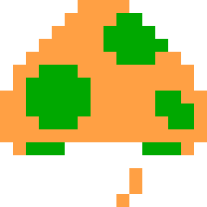
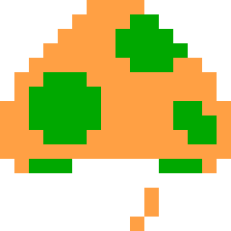

Centipide
Arow keys + space to play!
Centipede is a fixed shoooter arcade game developed by Atari in 1981. It was one of the most commercially successful games of the 80's and set new industry standards by being one of the fisrt games to implement color graphics. It was available on arcade machines, Atari 2600, Atari 5200, Atari 7800 and even on the Apple II and Commodore 64. It had a great reception by the audience (specially female) and also was one of the first games to have a female co-creator: Dona Bailey alongside Ed Logg.
Hi! My name is Pedro Enrique Perez, I was born in Mexico City back in February the 4th, 1998. If there are two things I've loved all my life are Music and Videogames. I studied audio engineering, worked as a music producer and recording engineer and now I'm very happy to be studing Programming for Games, Web & Mobile at VFS. I'm amazed on how much I have learned in just 2 months and I'm looking forward to the next challanges! In the meantime, here's my broken tribute to the vintage game: "Centipede". Enjoy! (Btw, original soundtrack made by yours trully.)
 
